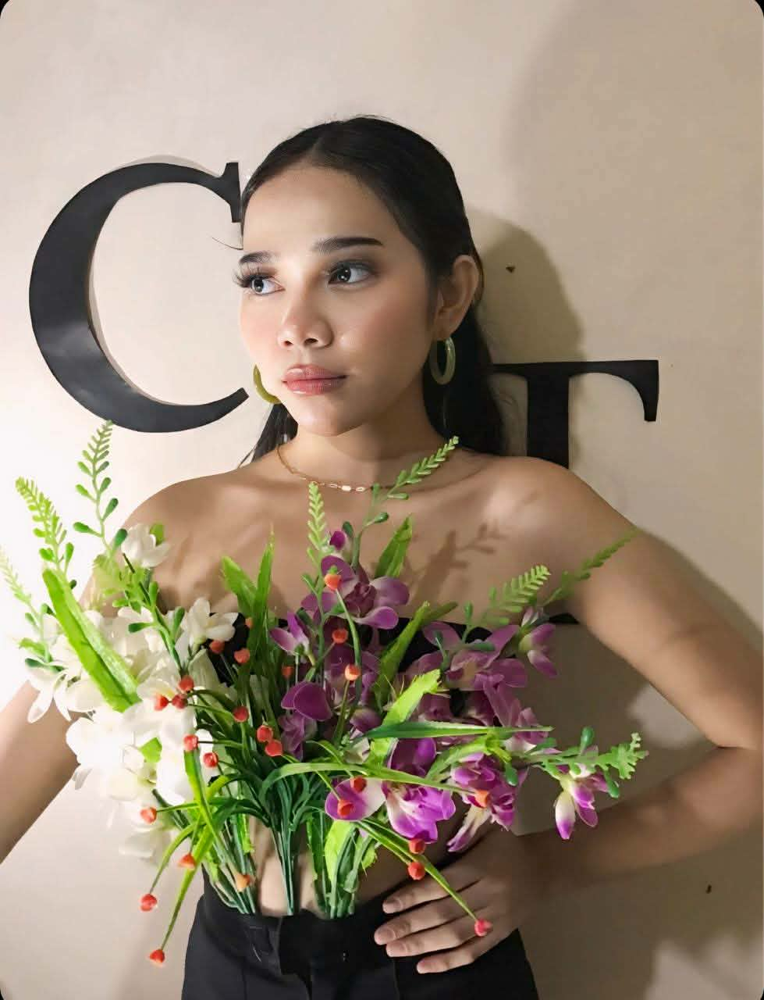

LANDING PAGEBrew
Haven— 01 —
Haven— 01 —

Hi, I'm Catrissia Par.
I'm a Computer Science student passionate about building thoughtful, user-friendly software and web experiences. I enjoy turning complex problems into clean, intuitive solutions through code and creative design.
Whether I'm developing interactive web applications, exploring data structures and algorithms, or crafting polished front-end interfaces, I love learning new technologies and bringing ideas to life.
A few creative categories and sample layouts. Replace these previews with your actual project images.
✳ Your next favorite project could go here.
I'd be happy to hear from you. Reach out or find me on these platforms.
looking forward to it!